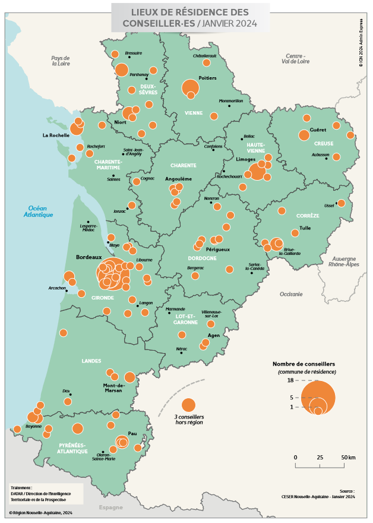

(voir console)
Sur une carte de population, les points (disques) se chevauchent et la surface totale colorée n'est plus en correspondance avec la population totale représentée. Les zones à forte densité (ex. métropoles) sont souvent le siège de ces chevauchements, réduisant leur poids visuel et rendant difficile la comparaison de leur population par rapport à la population totale ou la comparaison entre populations de différentes métropoles. Exemple : sur cette carte, quel est vraiment le poids de Bordeaux ? De plus, lorsque les points sont proches et de même taille, la lecture est presque impossible (ex. Périgueux).
Je propose une métaphore liquide en deux dimensions, comme de l'eau sur une surface hydrophobique. Imaginons qu'à chaque point de données soit déposée de l'eau goutte à goutte. Pour les points isolés (ex. Guéret), la goutte grossit en un cercle parfait. Mais que se passe-t-il pour les chevauchements ?
Pour le moment ma solution est de répartir équitablement la surface de chevauchement entre les disques des deux points concernés. Ce n'est pas nécessairement très exact dans la métaphore liquide, car le liquide se répartirait d'abord équitablement depuis le centre, avant d'entrer en collision avec le liquide de l'autre point et de se répartir latéralement. Peut-être. Mais c'est assez proche et permet d'avoir une représentation où la surface est correctement proportionnelle à la population.
Pour renforcer la métaphore liquide et la compréhension intuitive de la représentation, il serait bien aussi de rajouter de la tension de surface.